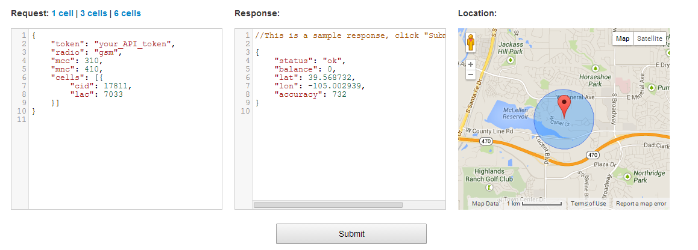

Why would we consider cellular network in our research
We choose cellular network to determine location because
- Battery Efficiency because our phones are always connected with the network through towers.
- The responding time is very fast because we use post method to connect to a server for the location repsonse
- It works indoor comparing to GPS that only work outdoor.
How do we get the latitude and longitude from our cellular network
In order to get the latitude and longitude by this method, we have to pick a server that has control of cell towers that are connected with our devices, then we send the request to these server to get a response back that contains the latitude and longitude.
There are four possible servers that we find during our research.
- Google hidden API which is disabled three years ago.
- Our carriers servers which are private and expensive
- opencellid.org which is a free server but their tower coverage is very limited.
- http://unwiredlabs.com/api is a pay server that let you send 50 free request per day. They have very big tower coverage
We finally picked http://unwiredlabs.com/api because their tower coverage is very good that works every time and very fast. In order to get latitude and longitude from the server all you have to do is send a JSON request to the server and get a response back that contains these two fields
What values that http://unwiredlabs.com/api servers need for the post request
There are 5 fields that the server need you to provide in order to provide back the response.
- token: this is the key that you register with them so that they can recognize who are requesting their servers
- radio: could be gsm or cdma depending on your phone type
- mcc: Mobile country code, depending on your country
- mnc: Mobile network code, depending on your carrier
- cid: the cell id, this is the cellular id of your phone under a particular cell tower
- lac: location code, this is the id of the tower that you are connecting to
This is a demo for the API that unwiredlabs has on their Website
